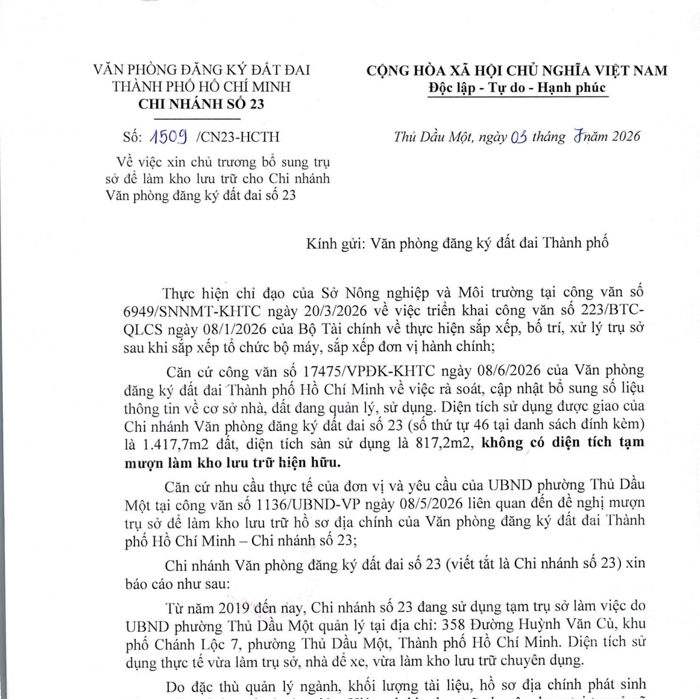
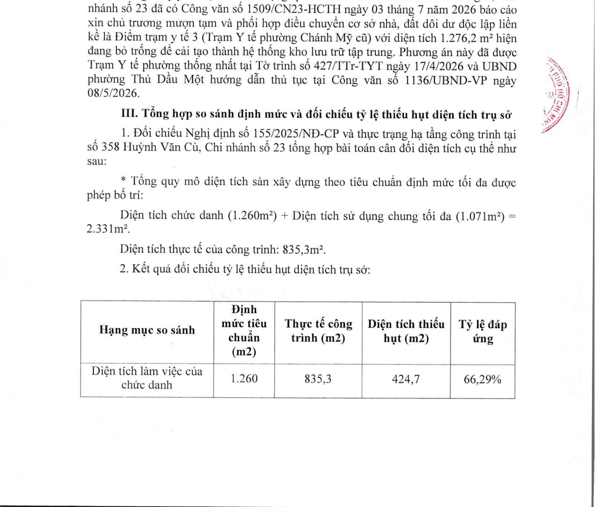
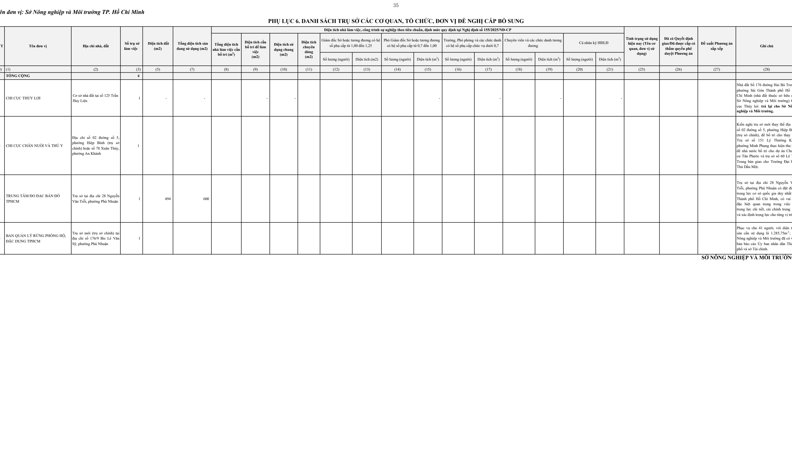

Đơn vị lập danh mục: Sở Nông nghiệp và Môi trường TP. Hồ Chí Minh
Điểm trạm y tế 3 cũ
Liền kề số 358 Huỳnh Văn Cù
1.276,20 m²
Hiện đang bỏ trống, xin điều chuyển
Thiếu 1.495,70 m²
Trụ sở cũ mới đạt 35,83% định mức
85 Người
Theo Quyết định số 480/QĐ-VPĐK-HC
Hiển thị toàn bộ 05 đơn vị đề xuất cấp bổ sung trụ sở nhà, đất theo mẫu Nghị định số 155/2025/NĐ-CP
Ngày 03/07/2026 - Ký bởi PGĐ Đặng Huy Cường
Trích yếu nội dung: Xin chủ trương bổ sung trụ sở để làm kho lưu trữ cho Chi nhánh Văn phòng đăng ký đất đai số 23 gửi Văn phòng Đăng ký đất đai TP.HCM.
Hồ sơ thẩm duyệt đính kèm:

Ngày 21/07/2026 - Ký bởi PGĐ Đặng Huy Cường
Trích yếu nội dung: Thuyết minh tiêu chuẩn, định mức sử dụng diện tích trụ sở làm việc tại số 358 Huỳnh Văn Cù theo Nghị định số 155/2025/NĐ-CP gửi UBND phường Thủ Dầu Một.
Kết luận kiến nghị trong văn bản:
"Sự thiếu hụt trầm trọng về diện tích sàn công trình hiện hữu (1.495,7 m²) là căn cứ buộc đơn vị phải thực hiện phương án liên kết mượn tạm 1.276,2 m² mặt bằng tại Điểm trạm y tế 3 (phường Chánh Mỹ cũ) làm kho chuyên dụng... Việc giữ lại nguyên vẹn trụ sở hiện hữu và bổ sung kho liên kết là phương án tối ưu, khả thi để duy trì hoạt động nghiệp vụ ổn định theo quy định tại Khoản 5 Điều 3 Nghị định số 155/2025/NĐ-CP."

Bản gốc trước khi bổ sung thêm Chi nhánh 23 vào STT 5
